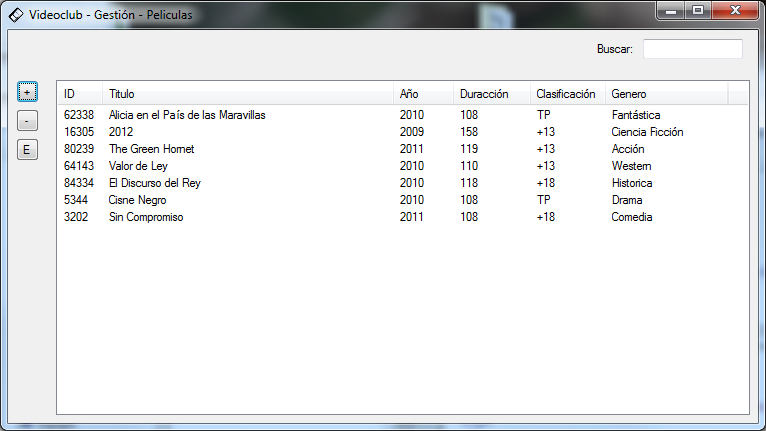

Agregar una pelicula es muy sencillo. Primero debemos pulsar el botón "Peliculas" en el menú principal (Dentro del área "Base de Datos").
Se nos abrirá un menú donde podrás ver todas las peliculas que ya se encuentran en la base de datos.
En la parte superior derecha hay un cuadro de busqueda que te puede facilitar la busqueda de una pelicula en concreto.
Para añadir una nueva pelicula pulsamos el botón "+" en el margen izquierdo.
Se nos abrirá un cuadro de dialogo en el que debemos que introducir todos los datos y luego tenemos que pulsar "Aceptar". Si algún dato no está bien introducido el formulario nos avisará cual es el dato incorrecto.
La caratula es opcional, pero es muy recomendable añadir una. La imagen será guardada en la base de datos por lo que no tendrá que preocuparte de si se borra la original.
Si lo que queremos es editar los datos de una pelicula, lo primero que debemos hacer es seleccionarla (Se admite multiselección) y despues pulsar el botón "E" en el margen izquierdo.
El formulario que nos aparecerá es idéntico al que aparece al añadir una pelicula, pero aparece con los datos de la pelicula a editar ya cargados.
Para borrar una pelicula solo tenemos que seleccionarla (Se admite multiselección) y pulsar el botón "-" en el margen izquierdo.